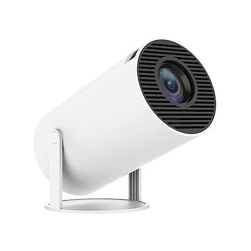
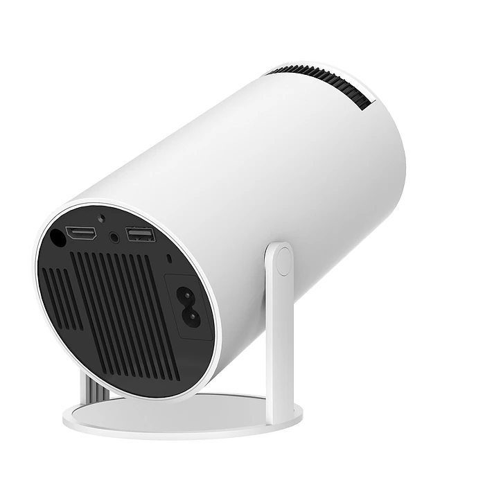

Was ist MitiCast Projektor und wie funktioniert es?
Der MitiCast Projektor ist ein kompakter Mini-Beamer in Zylinderform mit einem drehbaren Standfuß. Laut der offiziellen Website soll er jeden Raum in ein privates Kino verwandeln: Er projiziert ein Bild von bis zu 120 Zoll Diagonale, hat eingebaute Stereolautsprecher und ein integriertes Smart-System, sodass Filme und Serien ohne zusätzlichen Zuspieler abgespielt werden können.
Nach Angaben des Herstellers läuft auf dem Gerät Android 11. Über WLAN lassen sich damit Streaming-Inhalte direkt abrufen, und über kabelloses Screen Mirroring kann der Bildschirm eines Android- oder iOS-Geräts übertragen werden. Alternativ stehen Anschlüsse für HDMI, USB und AV zur Verfügung, etwa für Laptop, Spielkonsole oder USB-Stick. Auch Bluetooth wird genannt, zum Beispiel für externe Lautsprecher.
Die native Auflösung beträgt laut Spezifikation 720p (1280 × 720 Pixel). Zusätzlich unterstützt der Projektor 4K-Hardware-Dekodierung, das heißt, er kann 4K-Videos abspielen, gibt sie aber in seiner eigenen Auflösung wieder. Die Helligkeit wird mit 150 ANSI-Lumen angegeben, die Leistungsaufnahme mit 48 Watt.
Der Standfuß lässt sich laut Produktbildern drehen und neigen, sodass das Bild auch an die Decke oder schräg an die Wand geworfen werden kann. Laut Website ist das Gerät tragbar und leicht und eignet sich für drinnen und draußen, etwa für den Garten oder einen Campingausflug mit Stromanschluss.
Zur Einordnung: Mit 150 ANSI-Lumen ist der MitiCast für abgedunkelte Räume gedacht. In hellen Räumen oder bei Tageslicht wirkt das Bild deutlich blasser, und ein 120-Zoll-Bild ist nur bei Dunkelheit sinnvoll. Für gelegentliche Filmabende, Kinderzimmer oder Camping ist so ein Mini-Beamer eine praktische Lösung. Auf der Bestellseite wird er als neues und verbessertes Modell 2025 vorgestellt, das in die Handfläche passt und ohne Kabelsalat auskommen soll.
MitiCast Projektor Funktionen
Laut den Produktspezifikationen auf der offiziellen Website:
Auflösung: 720p HD (1280 × 720), Unterstützung für 4K-Hardware-Dekodierung.
Helligkeit und Bildgröße: 150 ANSI-Lumen, Projektionsgröße bis zu 120 Zoll.
Betriebssystem: Android 11 mit integriertem Smart-System.
Anschlüsse: HDMI, USB, AV, WLAN und Bluetooth, kabelloses Screen Mirroring.
Audio: eingebaute Stereolautsprecher.
Kompatibilität: Android, iOS, Laptops, Spielkonsolen und USB-Sticks.
Leistungsaufnahme: 48 Watt, Netzbetrieb; ein eingebauter Akku wird nicht genannt.
Angaben zu Gewicht, Abmessungen, Lebensdauer der Lichtquelle, Lautstärke des Lüfters oder Trapezkorrektur macht die Website nicht. Die Produktbilder zeigen eine Rückseite mit HDMI- und USB-Anschluss, Audioausgang und Netzbuchse.
Laut den häufig gestellten Fragen ist der MitiCast mit Handys, Tablets, Laptops und Konsolen kompatibel und unterstützt sowohl Kabelverbindungen als auch kabelloses Screen Mirroring, sodass Inhalte von Android, iOS oder anderen Smart-Geräten gestreamt werden können. Die maximale Bildgröße von 120 Zoll soll drinnen wie draußen ein Kinoerlebnis ermöglichen. Die Website hebt vier Eigenschaften besonders hervor: scharfes HD-Bild, eingebautes Smart-System, riesiges 120-Zoll-Display und ein tragbares, leichtes Gehäuse. Das Gehäuse ist auf den Bildern weiß, mit dunklem Lüftungsgitter rund um das Objektiv.
MitiCast Projektor Anwendung
Laut der offiziellen Website ist kein aufwendiger Aufbau nötig: Projektor aufstellen, an den Strom anschließen, auf eine Wand oder Leinwand ausrichten und loslegen. Über den drehbaren Standfuß lässt sich der Winkel anpassen, auch für eine Projektion an die Decke.
Für Streaming verbinden Sie den Projektor mit Ihrem WLAN und nutzen die Apps des Android-Systems. Alternativ spiegeln Sie den Bildschirm Ihres Smartphones oder Tablets kabellos, oder Sie schließen einen Laptop, eine Spielkonsole oder einen Streaming-Stick per HDMI an. Filme auf einem USB-Stick lassen sich direkt abspielen.
Für das beste Bild sorgen Sie für einen möglichst dunklen Raum und eine helle, glatte Projektionsfläche. Die Bildgröße hängt vom Abstand zur Wand ab: Je weiter der Projektor entfernt steht, desto größer, aber auch dunkler wird das Bild. Stellen Sie anschließend die Schärfe ein, bis Schrift und Kanten klar sind.
Allgemeine Hinweise: Lassen Sie rund um das Gerät Platz für die Belüftung, und decken Sie die Lüftungsschlitze nicht ab. Schauen Sie nicht direkt in das Objektiv, besonders Kinder sollten darauf hingewiesen werden. Für bessere Klangqualität kann ein externer Bluetooth-Lautsprecher verbunden werden. Schalten Sie das Gerät nach dem Film aus und trennen Sie es bei längerer Nichtbenutzung vom Strom.
MitiCast Projektor – Rückerstattung
Laut der offiziellen Website gilt eine 30-tägige Geld-zurück-Garantie. Wenn Sie mit dem MitiCast nicht zufrieden sind, können Sie ihn innerhalb von 30 Tagen ab Erhalt der Bestellung zurückgeben.
Die Rückgaberichtlinie des Verkäufers beschreibt die Bedingungen genauer. Zuerst wenden Sie sich an den Kundenservice per E-Mail; es gibt eine eigene Adresse für deutschsprachige Kundinnen und Kunden. Geben Sie an, ob Sie einen Ersatz oder eine Erstattung wünschen. Die Ware muss sich im Originalzustand befinden, mit Originalverpackung und sicher verpackt.
Zurückgeschickt wird an die Adresse, die der Kundenservice nennt; Rücksendungen an andere Adressen werden laut Richtlinie abgelehnt. Für die Erstattung braucht der Verkäufer die Sendungsnummer der Rücksendung, und nach Ablauf der 30 Tage werden Rücksendungen nicht mehr angenommen.
Laut den häufig gestellten Fragen werden alle Bestellungen innerhalb von 48 Stunden nach der Bestätigung verschickt, und der Standardversand dauert je nach Standort 5 bis 12 Werktage. Für Verbraucher in der EU gilt zusätzlich das gesetzliche Widerrufsrecht von 14 Tagen. Während der Hauptsaison oder bei schlechtem Wetter kann sich die Lieferung laut Website leicht verzögern.
Verkäufer ist laut Impressum die Label Products B.V. mit Sitz in Helmond in den Niederlanden. Bewahren Sie die Originalverpackung und Ihre Bestellbestätigung auf, damit eine Rückgabe innerhalb der Frist ohne Probleme möglich ist. Bei einem Defekt wenden Sie sich direkt an den Kundenservice.
MitiCast Projektor – Wo kaufen?
Der MitiCast Projektor wird über die offizielle Bestellseite get-miticast.com verkauft. Dort finden Sie die Produktspezifikationen, die häufig gestellten Fragen und die Angebote mit einem oder zwei Projektoren. Bezahlt wird laut Bestellseite über einen verschlüsselten Checkout, unter anderem per Kreditkarte, Google Pay oder Sofortüberweisung.
Mini-Beamer in dieser Zylinderform mit drehbarem Standfuß werden von vielen Händlern unter verschiedenen Namen angeboten. Bei Angeboten auf Marktplätzen ist daher nicht sicher, ob es sich um dasselbe Gerät mit denselben Spezifikationen handelt, und die 30-Tage-Garantie des Verkäufers gilt dort in der Regel nicht.
Achten Sie beim Besuch darauf, dass die Adresse get-miticast.com lautet, denn nur dort gelten die Bedingungen des Verkäufers. Die Bestellseite bietet nach der Bestellung weitere Geräte zum Aufpreis an; lesen Sie die Bestellübersicht deshalb genau, bevor Sie bestätigen, und lehnen Sie Zusatzangebote ab, die Sie nicht brauchen. Nach dem Versand erhalten Sie laut Website eine E-Mail mit einer Sendungsverfolgungsnummer und einem Link, über den Sie den Status Ihrer Lieferung verfolgen können.
Um sicherzugehen, dass Sie das Originalprodukt erhalten, besuchen die meisten Nutzer die offizielle Website.
Ist MitiCast Projektor Betrug?
Nach den verfügbaren Informationen gibt es keinen Hinweis darauf, dass der MitiCast Projektor Betrug ist. Das Gerät wird über eine Bestellseite mit Produktspezifikationen, häufig gestellten Fragen, Rückgaberichtlinie und Impressum verkauft. Verkäufer ist laut Impressum die Label Products B.V. aus Helmond in den Niederlanden, mit Handelsregisternummer und Umsatzsteuer-Identifikationsnummer.
Positiv sind die konkreten technischen Angaben, die ehrlich genannte native Auflösung von 720p, die 30-tägige Geld-zurück-Garantie und der deutschsprachige Kundenservice per E-Mail.
Es gibt aber Punkte, die Aufmerksamkeit verdienen. Werbeaussagen wie „gestochen scharfes HD“ und „4K“ sollten Sie richtig einordnen: Die Bildwiedergabe erfolgt in 720p, 4K bezieht sich nur auf die Dekodierung. Mit 150 ANSI-Lumen ist das Gerät für dunkle Räume gedacht. Angaben wie „12.421 verifizierte Kundenbewertungen“ lassen sich nicht überprüfen, und die Bestellseite arbeitet mit Rabatthinweisen und Zusatzangeboten.
Vorsicht ist außerdem bei Angeboten außerhalb der offiziellen Website geboten, denn dort gilt die Garantie des Verkäufers in der Regel nicht.
Wie bei jedem günstigen Mini-Beamer sollten Sie realistische Erwartungen haben: Ein Gerät dieser Klasse ersetzt keinen Heimkino-Projektor mit Full-HD oder 4K, kann aber für den gelegentlichen Filmabend gut funktionieren. Wer die Bedingungen kennt und direkt auf der offiziellen Website bestellt, geht nach heutigem Stand kein besonderes Risiko ein.
Wer Produktdetails überprüfen oder die aktuelle Verfügbarkeit prüfen möchte, ist auf der offiziellen MitiCast Projektor-Website am sichersten aufgehoben.
